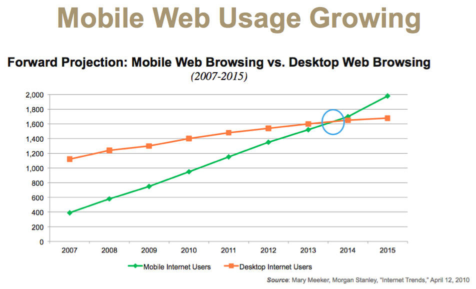
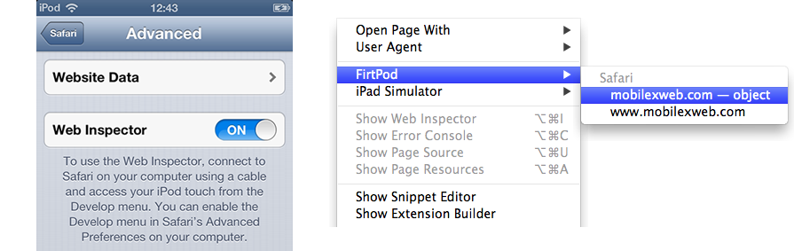
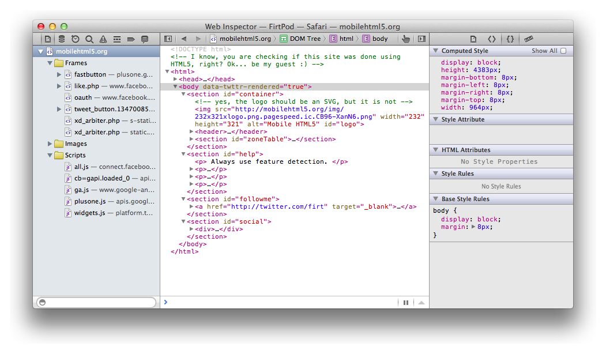
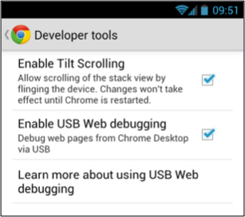
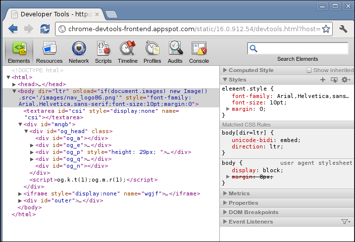

Intro To Mobile
Open-Source Libraries
for
Mobile App Development
Who Am I ?
- Luke Holmquist
- JBoss by Red Hat(Sr. Software Engineer)
- Aerogear
- Siena Class of 2002
- Blog: blog.lholmquist.org
- Twitter: @Sienaluke
Why are we here?
Mobile Web
Mobile App Development
HTML5 + REST
Hybrid
JBoss + Openshift
AeroGear Framework
Mobile Web - Background
Well, There isn't one really

Mobile Web - Growth
Holy Crap!

Mobile Web - Problems
- Various/Small Screen Sizes
Mobile Web - Problems
- Different Feature Sets

Mobile Web - Solutions
- Mobile First Thinking
Mobile Web - Solutions
- Responsive/Adaptive Web Design
- Bootstrap
- CSS 3 Media Queries
@media screen and (max-width: 800px) { .logo { margin-top: 1px; } } @media screen and (max-width: 480px) { .logo { margin-top: 30px; } }
Mobile Web - Solutions
- Feature Detection
- Modernizr
- User Agent Testing is Dead!!!
Modernizr.load({ test: Modernizr.geolocation, yep : 'geo.js', nope: 'geo-polyfill.js' });
Mobile Web
Demo
Mobile Apps

Mobile Web Apps
- Mobile Web Pages
- Styled as Native
- jQuery Mobile
- Ratchet
- Add to home screen - iOS
<link rel="apple-touch-icon-precomposed" sizes="72x72" href="..">Mobile Web Apps
Best Practices
- Single Page
- Optimize Scripts
- Limit HTTP Requests
- Focus Your Content
- HTML5 + REST
What do you
mean with
HTML5 + REST ?
The Mythical “HTML5”
- W3C Suite of Specifications
- Canvas
- Geolocation
- WebSockets
- SSE (Server-Sent Events)
- CSS3
- WebWorker
- Web Storage
- and some JavaScript APIs
JAX-RS RESTFul Endpoints
- Uses HTTP standards
- GET, POST, UPDATE, DELETE, etc...
- Returns XML, JSON content
- Annotate Class Methods for request mapping
@Path("/members")
public class SomeMemberService {
@GET
@Produces(MediaType.APPLICATION_JSON)
public List<Member> getAllMembers(){ .... }
}
REST...
- 200 OK
- 201 Created
- 400 Bad Request
- 404 Not Found
- 409 Conflict
AeroGear’s Mobile Web QuickStart
The HTML5 + REST example:
- single page app
- jQuery / jQuery mobile
- JavaEE
- JAX-RS Endpoints
- http://html5-aerogear.rhcloud.com/
Debugging Web Apps
- Chrome Dev Tools
- Safari Web Inspector
- Fire Bug
What about Mobile?
Debugging Mobile Web Apps
6 Months Ago

Debugging Mobile Web Apps
WEINRE

DEBUGGING MOBILE WEB APPS
Today

DEbugging Mobile WEb Apps
iOS 6

Debugging Mobile Web apps
iOS 6

Debugging Mobile WEb Apps
Chrome for Android(4.0+)

Debugging mobile web apps
Chrome for Android(4.0+)

Debugging mobile web apps
Demo
Going Native
as hybrid
Apache Cordova
aka - PhoneGap
- embedded browser in native app
- bridge between browser and native
- DEV => writes web app
- packages web app with the native code
- no device specific compile
- PLUGINS: between layers!
Apache Cordova
Demo
Aerogear
The Gear your looking for
Aerogear

AeroGear
Open Source Libraries for Mobile Connectivity:
- JBoss community project
- Dedicated to mobile development
- HTML5 and native
- Facilitate all types of mobile
- Mobile Web
- Hybrid
- Native mobile
- Examples, tutorials, & community
AeroGear
current offerings:
- AeroGear.js
- AeroGear-iOS
- AeroGear.jar (Android)
- server components:
- aerogear-controller
- aerogear-security
AeroGear.js
- internal usage of jQuery ($.ajax and $.extend)
- Example:
// create an empty pipeline:
var myPipeline = AeroGear.Pipeline();
// Add a connection/pipe object:
myPipeline.add("projects");
// Reading data from the 'myprojects' connection:
myPipeline.pipes['projects'].read();
AeroGear.js
- Data Manager
- Example:
// create an empty DataManager:
var myDataManager = AeroGear.DataManager();
// Add a store object:
myDataManager.add("projects");
// Reading data from the 'myDataManager' store:
myDataManager.stores['projects'].read();
AeroGear.next
- More transports (e.g. WebSocket)
- Data Sync and Push notifications
- OData?
- More platforms ?
grow the community
aerogear.js
Demo
How to Run
Option 1:
How to Run
Option 2:
Quickstarts
JBoss Developer Framework
http://www.jboss.org/jdf
- Maven
- Github
Questions?